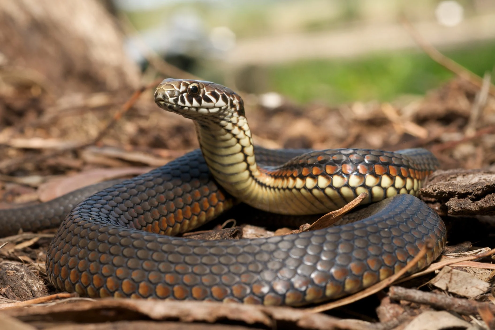

Animals
We have many animals that are available in our facility. All the animals will bring you joy to your life, and they need a loving home. The animals that we have include dogs and cats. We also have exotic animals which includes snakes, parrots, and lizards. All of them are trained well and they are obedient.
Benefits of getting an animal
You might be asking yourself “why should I even get an animal” . Well, it helps you get through the day if you’re having a bad day. It instructs kids about responsibility by being prepared for the future. Another thing would be that an animal can help with friendships and keep you company when your alone. Getting an animal would help you plan things out better in life.
Dogs
We have a few breeds of dogs that are all cute and adorable for you to get. Make sure you know what you need before getting a dog to be able to take care of it. The dog breeds include:

- German Shephard - Intelligent, Loyal
- Siberian Husky - Energetic, Good-Natured
- Rottwelier - Strong, Confident
- Golden Retriever - Active, Natural Even-Temper
- Chilhuahua - Extreamly Loyal, Bossy
- Beagle - Affectionate, Curious
Cats
We have a few breeds of cats that are all cute and adorable for you to get. Make sure you know what you need before getting a cat to be able to take care of it. The cat breeds include:

- British Shorthair - Intelligent, Calm
- Ragdoll - Docile, Affectionate
- Birman - Quiet, Gentle and Playful
- Bombay Cat - Spirited, Friendly
- American Curl - Sweet, Playful
- Chartreux - Well-Behaved, Quiet
Lizards
We have a few breeds of lizards that are all cute and adorable for you to get. Make sure you know what you need before getting a lizards to be able to take care of it. The lizard breeds include:

- Green Iguana - Gentle Demeanor, Calm
- Bearded Dragons - Docile, Generally Calm
- Chameleons - Gentle, Curious
- Geckos - Pleasant, Scared
- Monitor Lizards - Playful, Most Intelligent
Parrots
We have a few breeds of parrots that are all cute and adorable for you to get. Make sure you know what you need before getting a parrot to be able to take care of it. They are very talkative, and you can have a conversation with them. The parrot breeds include:

- Cockatiel - Friendly, Adaptive
- Lovebirds - Active, Easy Pet
- Cockatoos - Highly Social/Playful
- Macaw - Vibrant, Lively and Spectacular
- Eclectus Parrots - Impressive
Snakes
We have a few breeds of snakes that are all cute and adorable for you to get. Make sure you know what you need before getting a snake to be able to take care of it. The snake breeds include:
- Pythons - High-Spirited
- Rosy Boa - Gentle, Easy
- King Snake - Submissive, Curious
- Garter Snake - Fast, Docile
- Western hognose snake - Defensive, Docile